The Bizzing Bee
The Bizzing Bee
A BIZZING BEE COMPANION
Lines Worth Keeping
Poems, speeches and the long quotes — with the words inside them
5 chapters123 practice wordsquizzes & puzzles
The Bizzing Bee
Poems, speeches and the long quotes — with the words inside them

Poetry is a sound before it is a meaning. You will hear the shape before you can explain it.
Nearly every piece here changes direction somewhere. The note under it tells you where — but look first.
The hard words in each piece are listed after it, with how to say them. That is the spelling half of this book.
Slowly, with the punctuation exactly as it is. You will notice things reading cannot show you.
These are the passages that get quoted at half length and misquoted at full length. Here they are entire, so you can hear where the sentence actually turns — and Shakespeare’s sentences always turn.
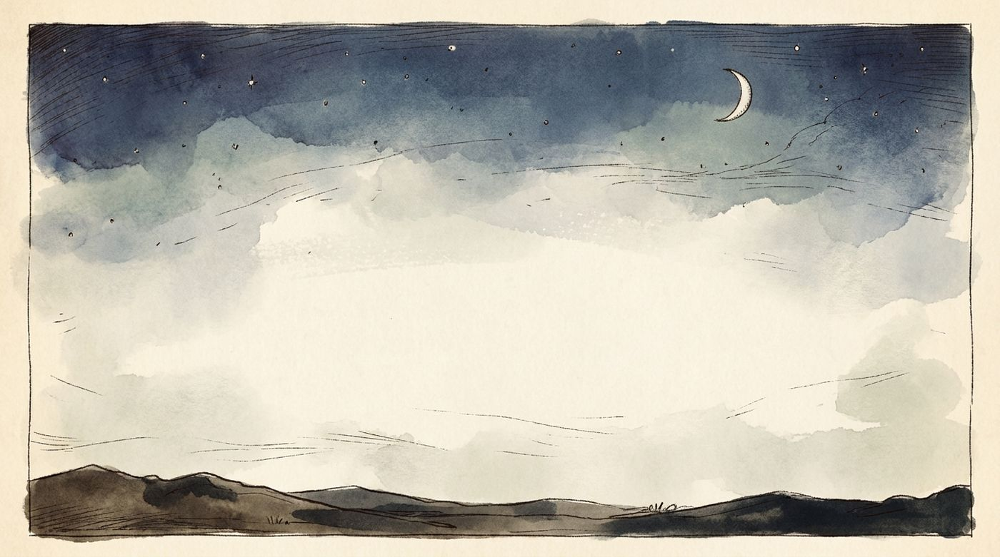
Not a speech about suicide so much as a speech about not knowing. Every line adds a clause and refuses to finish the thought; the colons and dashes are the sound of a man arguing with himself and losing. Read it slowly and you will hear that it never once says "I".
Dramatic speech · 14 lines · c. 1600
5 underlined below, glossed at the foot of the page.
Shylock builds the whole speech out of questions, and every question is one nobody can answer no to. That is the trap: by the time he reaches revenge you have already agreed to the eight steps before it. Notice it is prose, not verse — Shakespeare drops the metre when a character is arguing rather than feeling.
Dramatic speech · 8 lines · c. 1597
4 underlined below, glossed at the foot of the page.
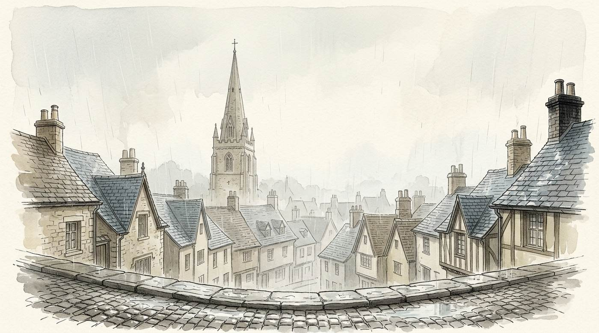
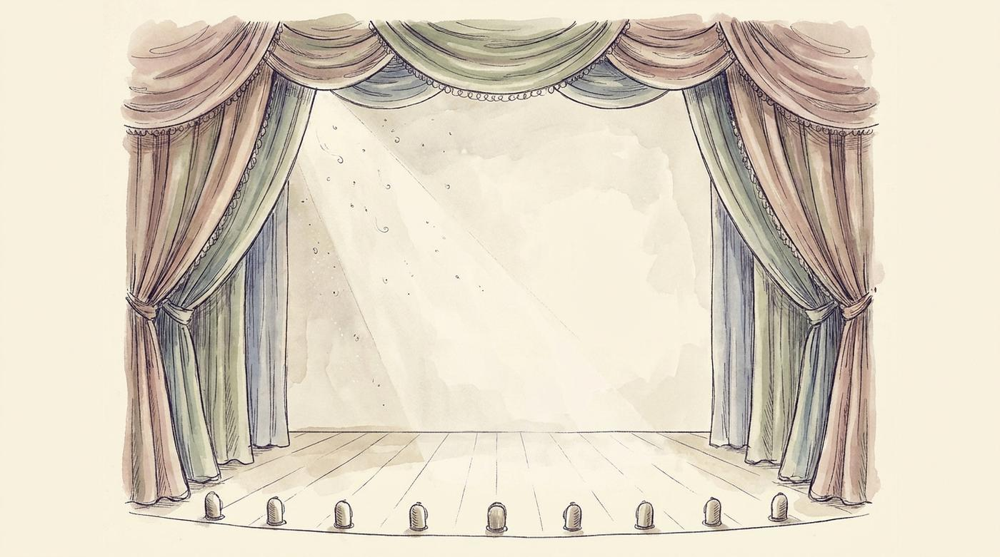
The answer to the speech above, and the two are usually taught apart, which ruins both. "Strain’d" here means forced or squeezed out — mercy cannot be demanded, only given. Listen to how the argument climbs: rain, then a crown, then a sceptre, then God.
Dramatic speech · 12 lines · c. 1597
5 underlined below, glossed at the foot of the page.
Three tomorrows in a row, and the line drags because of them — the rhythm is doing the exhaustion for him. Then the images shorten: candle, shadow, player, tale. He is running out of things to compare life to, and the last word is "nothing".
Dramatic speech · 10 lines · c. 1606
3 underlined below, glossed at the foot of the page.
The famous opening of a much longer catalogue — seven ages, and the speech walks all the way to "second childishness and mere oblivion". It is funny before it is sad, which is why the sadness lands.
Dramatic speech · 9 lines · c. 1599
3 underlined below, glossed at the foot of the page.
Very likely the last thing Shakespeare wrote about his own theatre — "the great globe itself" is both the world and the playhouse he worked in. "Into thin air" begins here. So does "such stuff as dreams are made on", which almost everyone quotes as "made of".
Dramatic speech · 11 lines · c. 1611
5 underlined below, glossed at the foot of the page.
Single lines by the poets in this part — the ones that broke off from their poems and went out into the language on their own.
A sonnet is an argument with a hinge in it. Eight lines set a problem, then something shifts — usually at line nine, in the English form at the final couplet — and the poem answers itself. Find the hinge and you have read the poem.
The hinge is "But" at line nine. Everything before it is a list of ways summer fails; everything after is the boast that the poem will not. And it was right — you are reading it four hundred years later.
Sonnet · 14 lines · 1609
3 underlined below, glossed at the foot of the page.
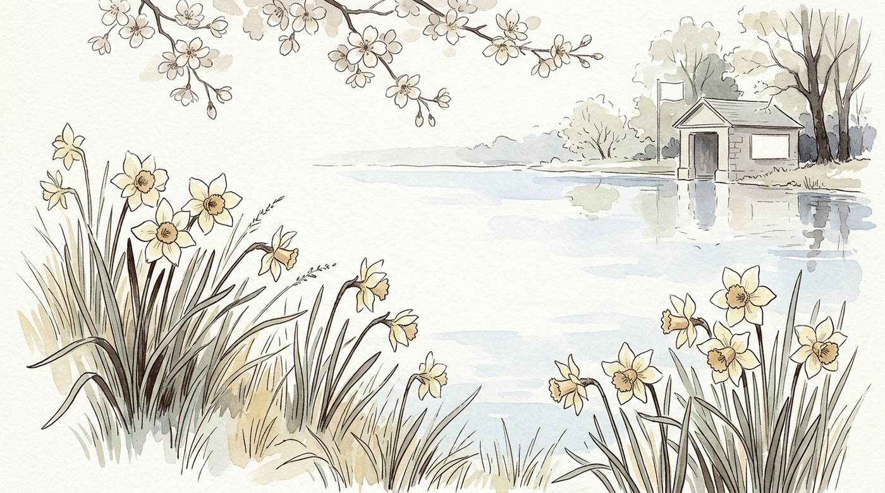
A definition written entirely in negatives — not love, not Time’s fool, alters not — until the couplet stakes the poet’s whole career on it. "Bark" is a ship; "his height be taken" is a navigator measuring a star.
Sonnet · 14 lines · 1609
4 underlined below, glossed at the foot of the page.
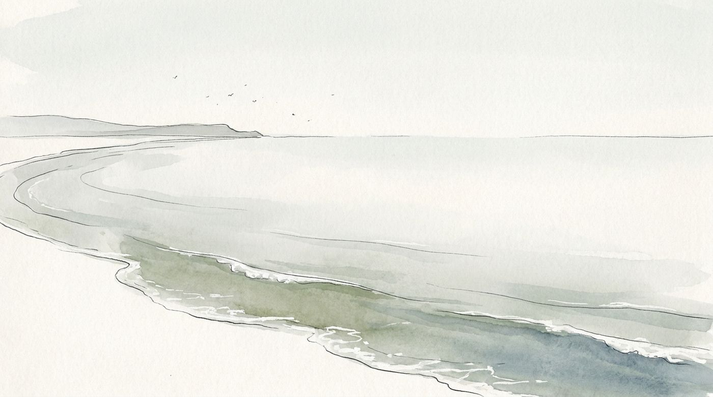
A joke at the expense of every other sonnet ever written. Thirteen lines of insults, and then a couplet that turns them all into the compliment: she is real, and the poets comparing women to suns and coral are lying.
Sonnet · 14 lines · 1609
3 underlined below, glossed at the foot of the page.
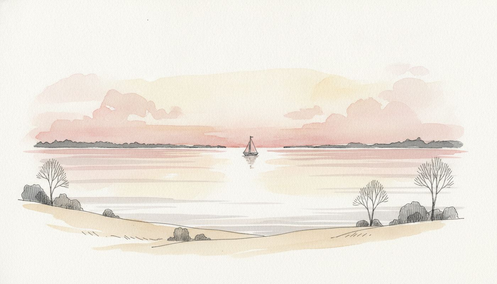
Eight lines of self-pity so complete it is almost funny, and then one word — "Haply", meaning by chance — turns the whole poem over. The lark image lifts the metre with it: after twelve heavy lines the verse suddenly climbs.
Sonnet · 14 lines · 1609
4 underlined below, glossed at the foot of the page.
A poem about reading a translation, which sounds dull and is not: it is about the moment a book cracks the world open. Keats got his explorer wrong — it was Balboa, not Cortez — and nobody has ever wanted the line changed.
Sonnet · 14 lines · 1816
4 underlined below, glossed at the foot of the page.
The great poet of lakes and mountains, undone by London at dawn. "Smokeless" is the key: he is seeing the city in the one hour before the fires are lit, and it will not look like this again all day.
Sonnet · 14 lines · 1807
3 underlined below, glossed at the foot of the page.
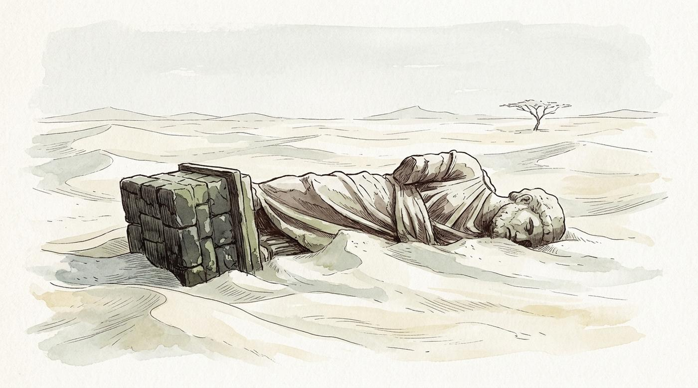
Four voices in fourteen lines: Shelley, the traveller, the sculptor and the dead king — and the king, who wanted the last word, is the one quoted inside two other people’s speech. "Nothing beside remains" is the shortest sentence in the poem and it lands like a door closing.
Sonnet · 14 lines · 1818
4 underlined below, glossed at the foot of the page.
Donne argues with Death the way a lawyer argues with a witness — calls it "poor Death", calls it a slave, points out that opium works better. The last four words are one of the great endings in English.
Sonnet · 14 lines · 1633
3 underlined below, glossed at the foot of the page.
Written two hundred years before anyone had a phone, and it is still the best complaint about being too busy to look up. "A sordid boon" — a filthy gift — is the sharpest three words in it.
Sonnet · 14 lines · 1807
4 underlined below, glossed at the foot of the page.
Single lines by the poets in this part — the ones that broke off from their poems and went out into the language on their own.
A haiku is not a small poem; it is a whole poem that has thrown away everything except the moment. Three lines, traditionally five syllables then seven then five, and somewhere in it a season and a cut — a place where the poem turns without saying so. The Japanese is given in rōmaji, and the English underneath is a plain rendering, not a translation trying to be a poem.
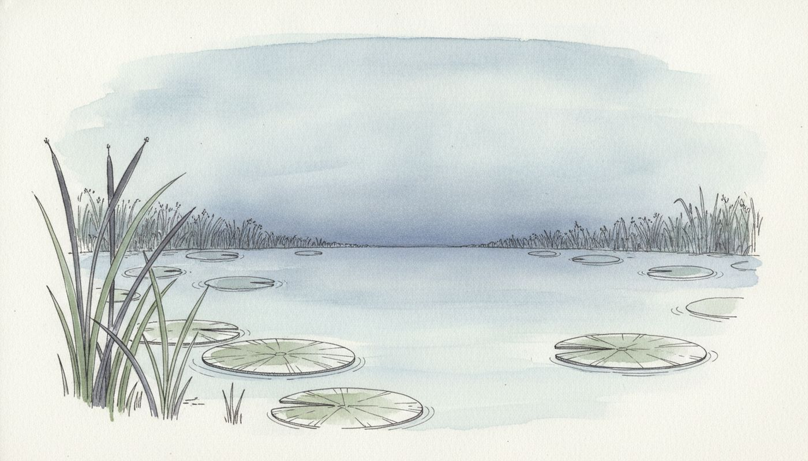
The most famous poem in Japanese. Nothing happens except a sound, and the whole art is in the silence you are made to notice before it.
Haiku · 17 syllables · 1686
1 underlined below, glossed at the foot of the page.
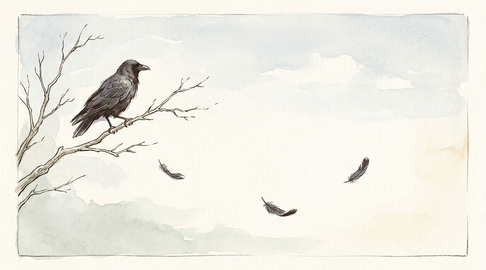
Three things and no verb of feeling. The poem trusts the crow, the branch and the failing light to do all of it.
Haiku · 17 syllables · 1680
1 underlined below, glossed at the foot of the page.
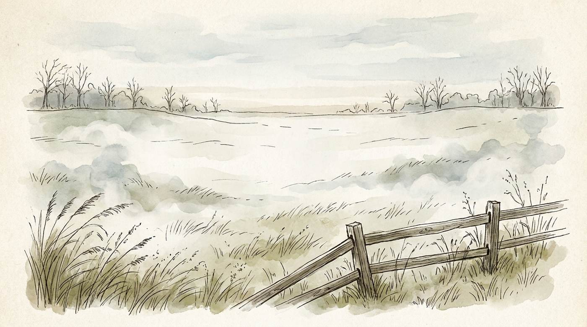
Written at a battlefield where an army was destroyed five hundred years earlier. Grass, and the word "remains", and he never mentions a single body.
Haiku · 17 syllables · 1689
1 underlined below, glossed at the foot of the page.
Issa wrote it after his daughter died. The Buddhist teaching says the world is passing, like dew; he agrees with the teaching and refuses it in the same breath. "Sarinagara" is the sound of a man who knows better and cannot help it.
Haiku · 17 syllables · 1819
1 underlined below, glossed at the foot of the page.
The kindest poem about ambition ever written, and the only advice most people need.
Haiku · 17 syllables · c. 1810
1 underlined below, glossed at the foot of the page.
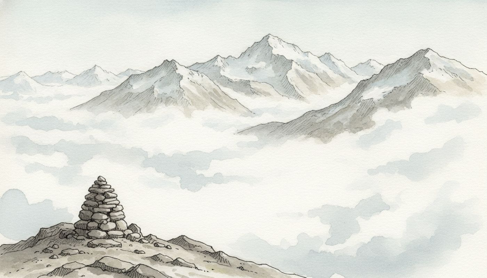
Buson painted as well as wrote, and it shows: the flash is a light source, and the poem is composed the way a picture is.
Haiku · 17 syllables · c. 1770
1 underlined below, glossed at the foot of the page.
Two facts and no comment. The cold is his; the hammer is somebody else already at work, which is what makes the cold lonely.
Haiku · 17 syllables · c. 1690
1 underlined below, glossed at the foot of the page.
One sense hands over to another: the sound stops and the smell arrives in its place. The verb for the scent is the verb for a bell being struck.
Haiku · 17 syllables · c. 1688
1 underlined below, glossed at the foot of the page.
You never see the two people, only what they are wearing. Buson was a painter and this is a painter’s trick: describe the shapes, let the reader supply the friends.
Haiku · 17 syllables · c. 1775
1 underlined below, glossed at the foot of the page.
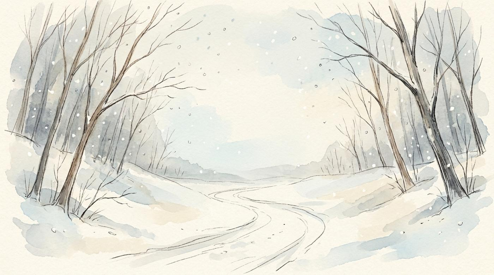
The whole poem is one physical shock standing in for a year of grief. Notice he does not say he was sad; he says he stepped on something.
Haiku · 17 syllables · c. 1770
1 underlined below, glossed at the foot of the page.
Written watching a frog lose a contest it could not win. Issa cheers for it anyway, by name, which is the whole of his poetry in three lines.
Haiku · 17 syllables · c. 1815
1 underlined below, glossed at the foot of the page.
The most cheerful terrible thing ever written. Both halves are true at once and the poem refuses to choose between them.
Haiku · 17 syllables · c. 1812
1 underlined below, glossed at the foot of the page.
Single lines by the poets in this part — the ones that broke off from their poems and went out into the language on their own.
Learning a poem by heart is not showing off. It is the only way to own one — to have it available at three in the morning when there is no book. Every poem here is short enough to learn in a week.
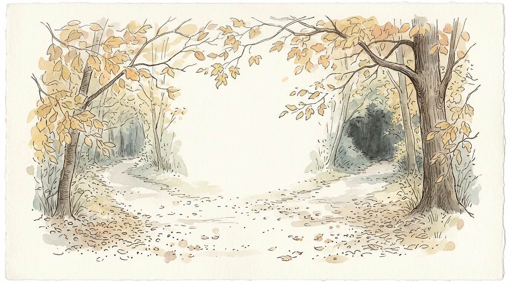
Almost universally misread. Frost says twice that the two roads were worn "about the same" — the poem is about the story we will tell later, "with a sigh", not about a brave choice. The sigh is the whole joke, and it is a sad one.
Lyric poem · 20 lines · 1916
3 underlined below, glossed at the foot of the page.
Look at the rhymes: each stanza’s odd line out becomes the next stanza’s rhyme, chaining the poem forward — until the last stanza, which rhymes all four and stops the chain. The repeated last line is the poem shutting its own door.
Lyric poem · 16 lines · 1923
2 underlined below, glossed at the foot of the page.
Henley wrote it from a hospital bed; he had lost a leg to tuberculosis at seventeen and was fighting to keep the other. "Invictus" is Latin for unconquered. Nothing in it is metaphorical.
Lyric poem · 16 lines · 1888
4 underlined below, glossed at the foot of the page.
One sentence. The whole poem is a single suspended "if" that does not reach its main clause until the last two lines, thirty-odd lines later — which is why reading it aloud is genuinely difficult, and why it works.
Lyric poem · 16 lines · 1910
3 underlined below, glossed at the foot of the page.
Fourteen questions and not one answer. Note the single word Blake changes in the last stanza: "Could" becomes "Dare". Having looked at the tiger for six stanzas he no longer doubts that it was possible, only that anyone would risk it. Blake’s own spelling is kept.
Lyric poem · 24 lines · 1794
5 underlined below, glossed at the foot of the page.
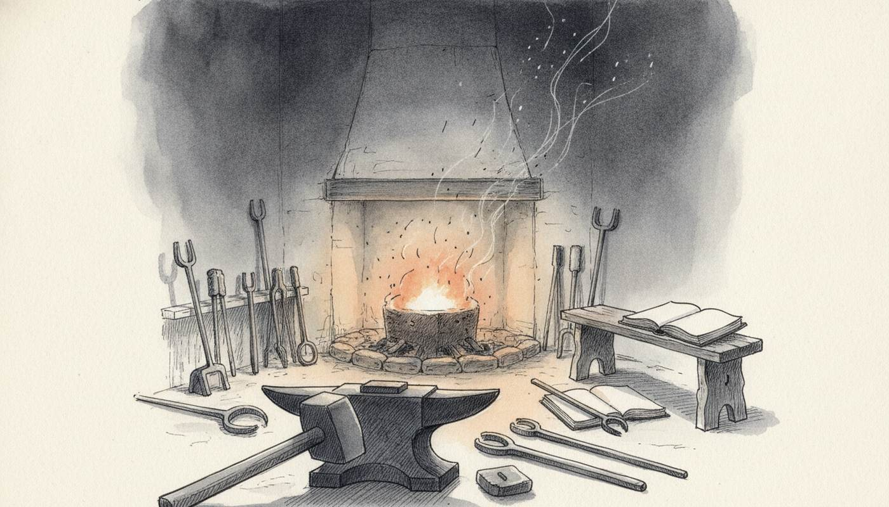
Dickinson’s dashes are not decoration — they are where she breathes, and where she refuses to close a thought. Keep them when you copy the poem out. The bird is never named as hope after the first line; it simply becomes a bird.
Lyric poem · 12 lines · c. 1861
3 underlined below, glossed at the foot of the page.
The point is the last stanza, not the flowers. The poem is about memory — about the fact that he did not know at the time what he was being given. "I gazed—and gazed—but little thought."
Lyric poem · 24 lines · 1807
5 underlined below, glossed at the foot of the page.
Eight lines, two images, and the second is worse than the first — a bird that cannot fly is still alive; a frozen field is not. Hughes builds the whole poem on that one step down.
Lyric poem · 8 lines · 1922
1 underlined below, glossed at the foot of the page.
Written in London, homesick, after hearing a shop-window fountain. "The bee-loud glade" is one of the best compound words in English, and this book owes it a mention.
Lyric poem · 12 lines · 1893
3 underlined below, glossed at the foot of the page.
Eight lines asking to be remembered, and then the turn takes it all back. Rossetti was nineteen. The generosity of the last two lines is the hardest thing in the poem to write and she makes it look easy.
Sonnet · 14 lines · 1862
3 underlined below, glossed at the foot of the page.
Whitman wrote it for Lincoln, weeks after the assassination, and hated how popular it became — it is far more conventional than the rest of him. Watch the shape: the lines shorten and step inward until the poem physically falls down the page.
Lyric poem · 8 lines · 1865
3 underlined below, glossed at the foot of the page.
Single lines by the poets in this part — the ones that broke off from their poems and went out into the language on their own.
Not every sentence worth learning is in a poem. These are the paragraphs — the openings and the addresses — that people carry around whole, and every one of them is built like a piece of music.
Two hundred and seventy-two words, delivered in about two minutes, after a two-hour speech nobody remembers. Count the triples: dedicate / consecrate / hallow, and of / by / for. The one prediction in it — "the world will little note, nor long remember what we say here" — is the only thing in the speech that turned out to be wrong.
Prose · 23 lines · 19 November 1863
5 underlined below, glossed at the foot of the page.
One sentence, ten opposed pairs, and every pair is joined by a comma where the grammar wants a full stop — which is exactly what makes it feel breathless. Most people can quote the first eleven words and have never met the sting in the last line.
Prose · 9 lines · 1859
3 underlined below, glossed at the foot of the page.
The most famous opening in English is a lie, and the second paragraph tells you so. Nothing is universally acknowledged; what Austen means is that the neighbours have decided. Irony is saying the opposite with a straight face, and this is the model.
Prose · 6 lines · 1813
3 underlined below, glossed at the foot of the page.
Three words, and one of them is doing all the work: "Call me" is not "my name is". You are being told what to use, not what is true. Then a single sentence runs for eighty words on the word "whenever" and never once says the word depression.
Prose · 9 lines · 1851
4 underlined below, glossed at the foot of the page.
"Deliberately" is the key word and it is not a synonym for slowly — it means on purpose, by choice. "Spartan-like" is an eponym: the Spartans of Laconia, whose plainness gave English both spartan and laconic.
Prose · 7 lines · 1854
4 underlined below, glossed at the foot of the page.
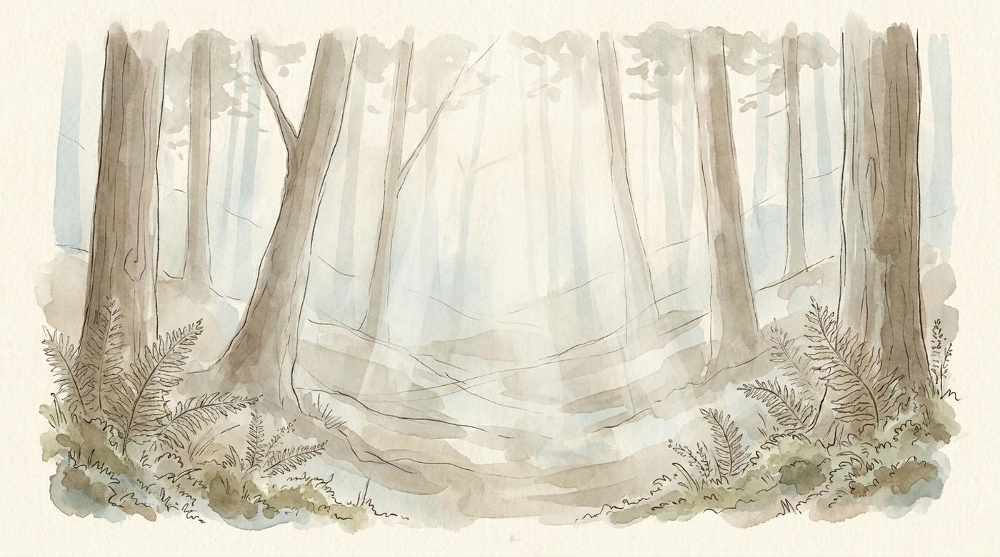
Single lines by the poets in this part — the ones that broke off from their poems and went out into the language on their own.
Checking before trying teaches you nothing twice.
Every word in here also lives in the Bizzing Bee app, with real audio, games and a coach that remembers what you miss. Paper for the muscles, app for the ears.
Bizzing Bee is an independent study project — not affiliated with, sponsored by, or endorsed by the Scripps National Spelling Bee, the North South Foundation, or Merriam-Webster. Competition names appear only to describe what the practice material relates to. Definitions, sentences, hints and stories are written for this project. Typefaces are open-licensed (SIL OFL).